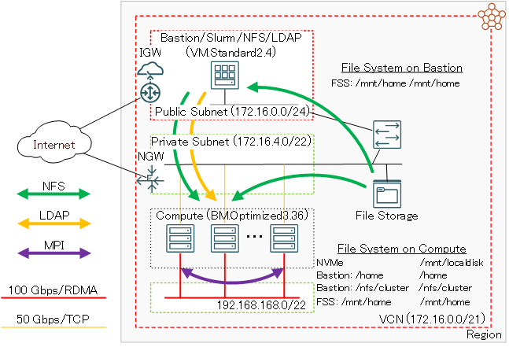
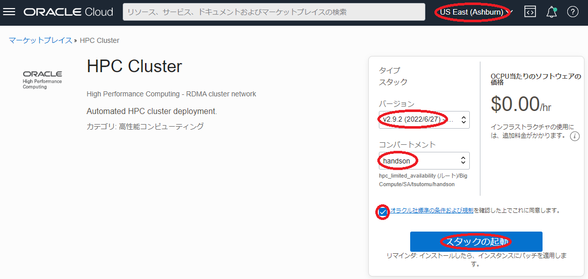
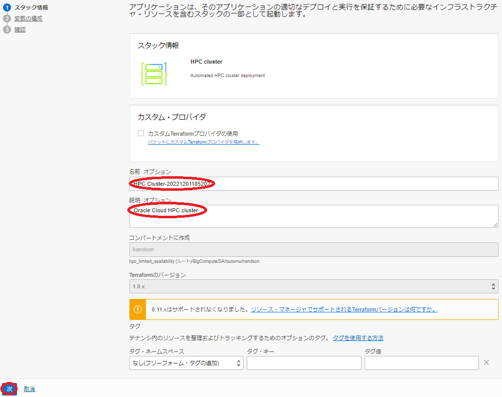
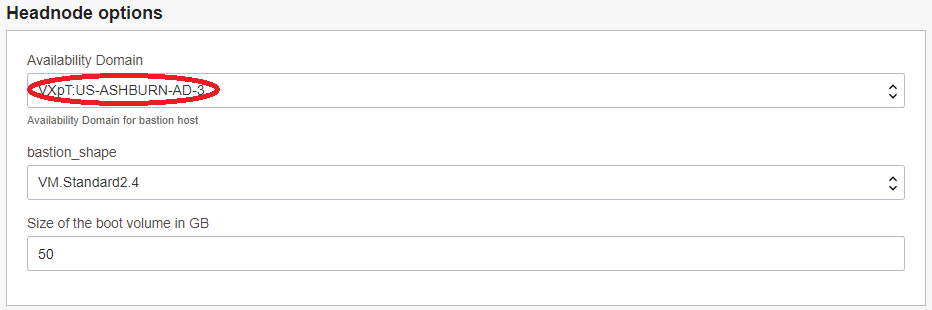

Oracle Cloud Infrastructure（以降OCIと記載）は、以下の特徴を持ち、HPCワークロードを実行するHPCクラスタにとって最適なクラウトサービスです。
- 仮想化オーバーヘッドの無いHPC用途に特化したベアメタルシェイプ
- RoCEv2を使用する高帯域・低レイテンシRDMAインターコネクトネットワーク
このチュートリアルは、OCIのマーケットプレイスから利用可能なHPCクラスタ構築のためのリソース・マネージャ用スタックを利用し、以下構成の典型的なHPCクラスタを構築、そのインターコネクト性能を検証します。
- HPC向けIntel Ice Lakeプロセッサ搭載計算ノード（BM.Optimized3.36）
- 100 Gbps RoCEv2 RDMAインターコネクト
- インターネットからSSH接続可能なbastionノード
- OS: Oracle Linux 7.9
- ジョブスケジューラ: Slurm
- HPCクラスタ内ホームディレクトリNFS共有

このHPCクラスタ構築用スタックを利用すると、通常であれば数日かかるようなHPCクラスタ構築作業を、OCIコンソールのGUIから10項目程度のメニューを選択するだけで実施することが可能になります。
リソース・マネージャについては、以下のチュートリアルも参考にしてください。
https://oracle-japan.github.io/ocitutorials/intermediates/resource-manager/
所要時間 : 約30分
前提条件 : HPCクラスタを収容するコンパートメント(ルート・コンパートメントでもOKです)の作成と、このコンパートメントに対する必要なリソース管理権限がユーザーに付与されていること。
注意 : チュートリアル内の画面ショットについては、OCIの現在のコンソール画面と異なっている場合があります。
1. スタックの作成
リソース・マネージャでリソースをデプロイする場合、まずそのためのスタックを作成する必要があります。
本章は、マーケットプレースから提供するHPCクラスタ構築用スタックを元に、前述のHPCクラスタ環境を構築するためのスタックを作成します。
-
以下マーケット・プレースのHPCクラスタ構築用スタックページにアクセスします。
-
OCIコンソールへのログイン画面が表示された場合（まだログインしていない場合）、ログインを完了します。
-
表示される以下画面の右上で、コンパートメント をHPCクラスタを構築するコンパートメントに指定、使用許諾 チェックボックスをチェックし、 スタックの起動 ボタンをクリックします。

- 表示される以下 スタック情報 画面で、以下の情報を入力し、下部の 次へ ボタンをクリックします。
- 名称 : スタックに付与する名前（任意）
- 説明 : スタックに付与する説明（任意）

-
表示される以下 変数の構成 画面で、各画面フィールドに以下の情報を入力し、下部の 次へ ボタンをクリックします。なお、ここに記載のないフィールドは、デフォルトのままとします。
5.1 Cluster configuration フィールド
- Public SSH key : HPCクラスタへのログインで使用するSSH公開鍵
- 公開鍵ファイルのアップロード（ SSHキー・ファイルの選択 ）と公開鍵のフィールドへの貼り付け（ SSHキーの貼付け ）が選択可能
- Configure LDAP authentication from bastion : チェックオフ
- LDAPを使用したHPCクラスタノード内統合ユーザ管理の利用有無を指定（本チュートリアルではローカルユーザ管理を使用）

5.2 Headnode options フィールド
- Availability Domain : bastionノードをデプロイするAD
- bastion_shape : bastionノードに使用するシェイプ（デフォルト：VM.Standard2.4）

5.3 Compute node options フィールド
- Availability Domain : 計算ノードをデプロイするAD
- Shape of the Compute Nodes : BM.Optimized3.36
- Initial cluster size : 計算ノードのノード数（デフォルト：2）
- Image version : Oracle Linux 7.9 OFED 5.0-2.1.8.0 RHCK 20210709
5.4 Advanced storage options フィールド
- Show advanced storage options : チェック
-
Shared NFS scratch space from NVME or Block volume : チェックオフ
- 計算ノードのNVMeディスク領域をNFS共有するかの指定（本チュートリアルでは共有しない）
- Public SSH key : HPCクラスタへのログインで使用するSSH公開鍵
-
表示される 確認 画面で、これまでの設定項目が意図したものになっているかを確認し、以下 作成されたスタックで適用を実行しますか。 フィールドの 適用の実行 をチェックオフし、下部の 作成 ボタンをクリックします。

ここで 適用の実行 をチェックした場合、 作成 ボタンのクリックと同時にスタックの適用が開始され、HPCクラスタのデプロイが始まりますが、このチュートリアルではスタックの計画を実行してから適用を行います。
これで、以下画面のとおりHPCクラスタ構築用スタックが作成されました。

2. スタックの計画
本章は、完成したリソース・マネージャのスタックを計画し、どのようなリソースがデプロイされるか確認します。
-
作成したスタックの以下 スタックの詳細 画面で、 計画 ボタンをクリックします。

-
表示される以下 計画 サイドバーで、 計画 ボタンをクリックします。

-
表示される以下 ジョブ詳細 ウィンドウで、左上のステータスが 受入れ済 → 進行中 → 成功 と遷移すれば、スタックの計画が終了しています。

表示される以下 ログ フィールドで、適用時にデプロイされるリソースを確認します。

3. スタックの適用
本章は、計画で作成されるリソースに問題が無いことを確認したスタックに対し、適用を行いHPCクラスタをデプロイします。
-
以下 スタックの詳細 画面で、 適用 ボタンをクリックします。

-
表示される以下 適用 サイドバーで、 適用 ボタンをクリックします。

-
表示される以下 ジョブ詳細 ウィンドウで、左上のステータスが 受入れ済 → 進行中 と遷移すれば、スタックの適用が実施されています。

表示される以下 ログ フィールドで、リソースのデプロイ状況を確認します。
この適用が完了するまでの所要時間は、計算ノードのノード数が2ノードの場合で15分程度です。
ステータスが 成功 となれば、HPCクラスタのデプロイが完了しています。
4. HPCクラスタの確認
本章は、デプロイされたHPCクラスタにログインし、環境を確認します。
-
bastionノードログイン
スタック適用時の以下 ログ フィールドの最後に表示されているbastionのIPアドレスを使用し、SSHでbastionにインターネット経由ログインします。

このSSH接続では、スタックに指定したSSH公開鍵に対応する秘密鍵を使用します。
> ssh -i path_to_ssh_secret_key 123.456.789.123 -
計算ノードログイン
計算ノードは、プライベートサブネットに接続されており、インターネット経由ログインすることが出来ないため、bastionノードを経由してログインします。
計算ノードのホスト名は、bastionノードの/etc/opt/oci-hpcディレクトリ以下のファイルに格納されており、hostfile.tcpとhostfile.rdmaがそれぞれプライベートサブネット接続とインターコネクト用RDMAサブネット接続に使用するIPアドレスに対応するホスト名です。このため、bastionノードから計算ノードにログインする場合、hostfile.tcpファイルに格納されているホスト名を使用します。
> cat /etc/opt/oci-hpc/hostfile.tcp inst-ecrs7-massive-coyote inst-mnykj-massive-coyote > ssh inst-ecrs7-massive-coyote -
計算ノードファイルシステム確認
計算ノードは、以下のようにNVMe領域が/mnt/localdiskにマウントされています。
> df -k /mnt/localdisk Filesystem 1K-blocks Used Available Use% Mounted on /dev/nvme0n1p1 3748905484 32976 3748872508 1% /mnt/localdiskまた、以下のようにbasionノードのホームディレクトリと/export/clusterが全ての計算ノードで共有されています。この/export/cluster領域は、Slurmのspool領域に使用されます。
> df -k /home /nfs/cluster Filesystem 1K-blocks Used Available Use% Mounted on bastion_ip:/home 40223744 14131200 26092544 36% /home bastion_ip:/export/cluster 40223744 14131200 26092544 36% /nfs/cluster
5. MPIプログラム実行
本章は、MPIプログラムをSlurmを介してバッチジョブとして投入し、構築したHPCクラスタのインターコネクト性能を確認します。
以下のバッチジョブ結果確認から、MPIのPing-Pongで以下の性能が出ていることがわかります。
- 帯域：約12 GB/s
- レイテンシ：約1.7 μs
-
バッチジョブスクリプト作成
以下のバッチジョブ投入用スクリプトをbastionノードのホームディレクトリ下に作成します。
> cat submit.sh #!/bin/bash #SBATCH -p compute #SBATCH -n 2 #SBATCH -N 2 #SBATCH -J ping_ping #SBATCH -o stdout.%J #SBATCH -e stderr.%J # Only for BM.Optimized3.36 export UCX_NET_DEVICES=mlx5_2:1 source /etc/profile.d/modules.sh module load intel/mpi/latest mpirun IMB-MPI1 -msglog 3:28 PingPong -
バッチジョブ投入
作成したスクリプトをバッチジョブとして投入します。
> sbatch submit.sh Submitted batch job 2 -
バッチジョブ結果確認
投入したバッチジョブの結果を確認します。
> cat stderr.2 Loading mpi version 2021.3.0 > cat stdout.2 #---------------------------------------------------------------- # Intel(R) MPI Benchmarks 2021.2, MPI-1 part #---------------------------------------------------------------- # Date : Tue Feb 15 08:02:48 2022 # Machine : x86_64 # System : Linux # Release : 3.10.0-1160.25.1.el7.x86_64 # Version : #1 SMP Tue Apr 27 15:52:10 PDT 2021 # MPI Version : 3.1 # MPI Thread Environment: # Calling sequence was: # IMB-MPI1 -msglog 3:28 PingPong # Minimum message length in bytes: 0 # Maximum message length in bytes: 268435456 # # MPI_Datatype : MPI_BYTE # MPI_Datatype for reductions : MPI_FLOAT # MPI_Op : MPI_SUM # # # List of Benchmarks to run: # PingPong #--------------------------------------------------- # Benchmarking PingPong # #processes = 2 #--------------------------------------------------- #bytes #repetitions t[usec] Mbytes/sec 0 1000 1.72 0.00 8 1000 1.73 4.62 16 1000 1.75 9.17 32 1000 1.77 18.11 64 1000 1.86 34.36 128 1000 1.92 66.50 256 1000 2.19 117.04 512 1000 2.24 228.74 1024 1000 2.38 431.07 2048 1000 2.98 687.54 4096 1000 3.54 1158.67 8192 1000 4.10 1998.63 16384 1000 5.52 2968.87 32768 1000 7.45 4396.34 65536 640 12.60 5200.24 131072 320 17.94 7307.18 262144 160 28.54 9184.01 524288 80 49.91 10504.31 1048576 40 92.51 11334.97 2097152 20 177.93 11786.26 4194304 10 348.68 12029.08 8388608 5 690.13 12155.19 16777216 2 1373.20 12217.63 33554432 1 2742.04 12237.02 67108864 1 5474.34 12258.80 134217728 1 10944.01 12264.04 268435456 1 21872.05 12272.99 # All processes entering MPI_Finalize
6. スタックの破棄
本章は、スタックを破棄することで、構築したHPCクラスタを削除します。
-
以下 スタックの詳細 画面で、 破棄 ボタンをクリックします。

-
表示される以下 破棄 サイドバーで、 破棄 ボタンをクリックします。

-
表示される以下 ジョブ詳細 ウィンドウで、左上のステータスが 受入れ済 → 進行中 と遷移すれば、スタックの破棄が実施されています。

表示される以下 ログ フィールドで、リソースの削除状況を確認します。
この破棄が完了するまでの所要時間は、計算ノードのノード数が2ノードの場合で5分程度です。
ステータスが 成功 となれば、HPCクラスタの削除が完了しています。
これで、このチュートリアルは終了です。